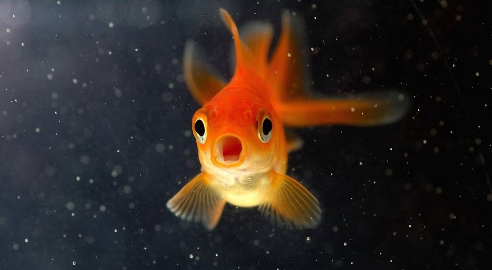

A Fascinating Aquatic Companion
The goldfish, a beloved and often underestimated aquatic companion, is much more than its shimmering scales and captivating colors. Commonly found as a household pet or even as a prize at carnivals, goldfish have a remarkable story to tell.
What many people may not realize is the potential for longevity that these fish possess. With proper care and attention, a goldfish can thrive for a surprising 1-6 months, which is quite an improvement from the misconceived 1-3 weeks often associated with them.
Their unique beauty and the opportunity to care for these fascinating creatures make goldfish a cherished addition to many households. Whether it's the calming presence they bring to a room or the joy of witnessing their graceful movements in an aquarium, goldfish have a special place in the hearts of those who appreciate their allure. So, next time you encounter a goldfish, remember the hidden story behind these aquatic wonders.